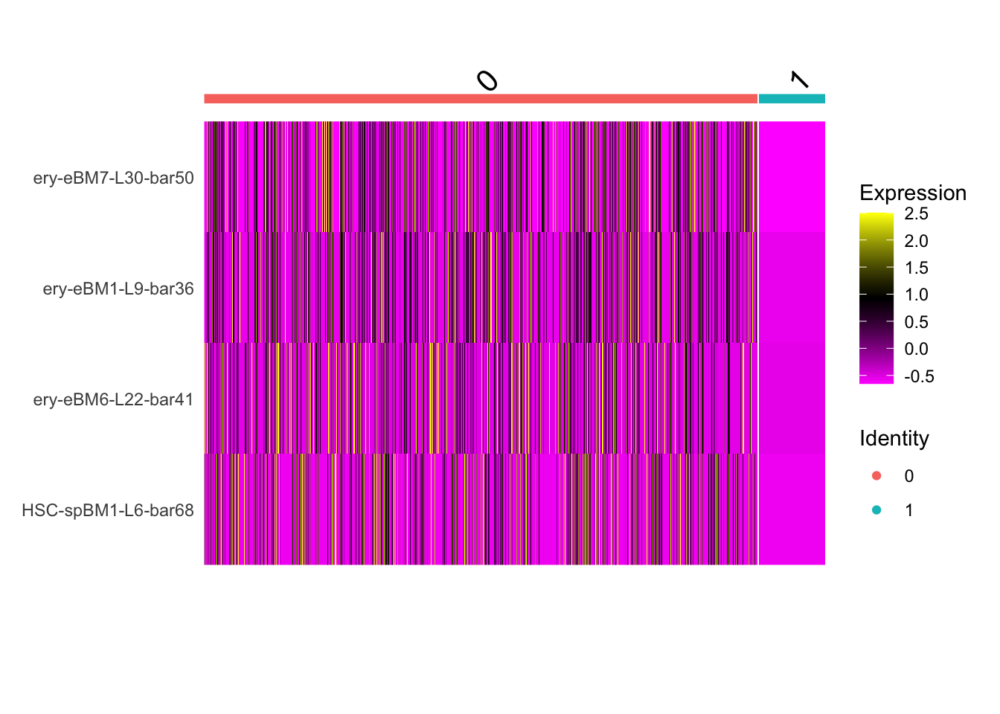

2 Free space assignment
Introduction single cell RNA sequencing
At the start of my workflows course, I was presented by my teachers to perform a free space assignment. And as it sounds, it was completely free. It had to be Life Science related, and you had to learn something from it! The questions that are noted below where asked to me, and the answers I gave are shown under it.
Where do I want to be in ±2 years?How am I doing now with respect to this goal?
What would be the next skill to learn?
Planning:
May 8th
2-4 hours: Finding the read count tables, and looking for associated code. Inspecting the data if it is usable.
May 14th
6-8 hours: How do I analyse this read count, and can I make an expression profile of these read counts.
May 15th
3-4 hours: Continue creating a expression profile, or if already finished, start identifying the type of cell.
May 21st
6-7 hours: Continue identifying the type of cell that is expressed by its expression profile.
May 26th
2 hours: Finish off the free space assignment, make sure everything is nice and the layout sits nice of the portfolio.
Start of the free time project:
I started looking for YouTube videos that could give me some insights on how to perform Single Cell RNA Sequencing for some background information. It started with the following video’s (same creator, its a series, but not everything was as need so I filtered a little bit:
(Ep. 1) (SIB - Swiss Institute of Bioinformatics 2023f)
(Ep. 3) (SIB - Swiss Institute of Bioinformatics 2023a)
(Ep. 4 halverwege gestart, daar was uitleg over wat je in R kon doen met bijvoorbeeld een PCA analysis, en met de package Seurat wat de functies daar van waren.) (SIB - Swiss Institute of Bioinformatics 2023e)
(Ep. 6 clustering) (SIB - Swiss Institute of Bioinformatics 2023c)
(Ep. 7 Cell type anotation) (SIB - Swiss Institute of Bioinformatics 2023b)
(Ep. 8 DGE analysis) (SIB - Swiss Institute of Bioinformatics 2023d)
I gained information about what the workflow consists of, some different packages and also what some different analysis were that I could perform on the data set once I found a count table / count matrix.
Then I proceeded to watch the following video. From this video I gained information about meaning of some words, and again packages that I could use for analysis of Single Cell RNA Sequences
Meaning of words
R packages for Single cell RNA sequencing
After the YouTube video I went to search on her github page for some packages or data sets that I could use, which could or could not have included code and a count table.
Some time had past and I found a promising repository, and upon reading the README file is discovered some insights about also coursed and other things that I could follow to perform a Single Cell RNA Sequence: (“Awesome-Single-Cell/README.md at Master \(\cdot\) Seandavi/Awesome-Single-Cell” n.d.)
The cited course emerged in my hands, and I was eager to see what it could do for me (“Cellgeni/scRNA.seq.course” 2024). I was snooping around in all the files, and when looking at the README file I saw that there was a Webpage, and also a shared Data folder set! This of course is perfect for me, because I was needed to find a data set, with a read count table so that I could perform the analysis.
When looking at the website I saw the (presumably) read count table, it was named GSE149938_umi_matrix.csv.gz. This file was put into the raw data folder, and a copy was placed into the data folder.
I was searching for any sign of the Umi matrix being in correspondence with the read count table, and I came across the following website that said:
“Sequencing data from single-cell RNA-seq experiments must be converted into a matrix of expression values. This is usually a count matrix containing the number of reads mapped to each gene (row) in each cell (column). Alternatively, the counts may be that of the number of unique molecular identifiers (UMIs); these are interpreted in the same manner as read counts but are less affected by PCR artifacts during library preparation” Chapter 3 Getting scRNA-seq Datasets Introduction to Single-Cell Analysis with Bioconductor (n.d.)
Revealing the Umi Matrix
The UMI (Unique Molecular Identifier) matrix I downloaded was input into the Umi_matrix_NK object for further analysis. Downloaded from “S3 Browser Singlecellcoursedata/” (n.d.).
I found that there were multiple ways to import matrix data into R, one example I came up with myself was the above version. After further notice, and research, I found out this might not have been the best way.
I had read on the bioconducter website that I could best use read.delim or use the package scuttle and then use the function readSparseCounts because of the non zero-values not being taken into consideration. When looking at the Umi_matrix_NK object, I saw a lot of zero values, so I thought this could come in handy.
I performed the following commands:
if (!require("BiocManager", quietly = TRUE))
install.packages("BiocManager")
if (!require("scuttle", quietly = TRUE))
BiocManager::install("scuttle")library(scuttle)
sparse_matrix_NK <- readSparseCounts(here::here("data","GSE149938_umi_matrix.csv.gz"))
dim(sparse_matrix_NK) # check the dimensions
But when trying out the code I got the following error message:
Error in as(do.call(cbind, current[cell.cols]), “dgCMatrix”) : no method or default for coercing “NULL” to “dgCMatrix”
And when you thought things couldn’t get any worse, git and github decided to not work as well. This because of the fact that on the Umi_matrix website, there also was another file called matrix, which I downloaded onto my computer.
I had put this into my raw_data folder, and copied it into my data folder. When I tried to push my changes to github, it gave me an error. I kinda ignored this error for another 2 commits before I checked what it said. The file was too big, it didn’t upload. This of course was a problem, but I found out I didn’t need this (300 MB) matrix file (I also had it twice so make that 600 MB). I tried a lot of different things, but it just did not work. I tried in the terminal, I tried in the git section in the top right. Nothing was working for me. In the terminal I looked for the git help page, and that did not do anything for me like a quick fix. It looked like I would be stuck for a little while.
Some awful time later on google and github forums I found the following solution (Hallelujah): The answer is simple: use the git reset –soft HEAD~1 command. This command will undo your last commit, but it will keep your changes and your staging intact.
So I tried, and nothing worked, so I typed it in again, and again, and again, and then I even changed it to HEAD~3 to make it every 3 commits. Then all of a sudden it all came back, my last (I think) 10 commits onto my screen. I repushed, and it stopped me in my tracks. I was thinking, when will this end. Then I did:
And now finally, after all this work. I was back to only my original problem. The readSparseCounts problem.
I went back to the readSparseCounts and saw that it did not work, so I went to look for how to load in UMI counts. I looked at the same website from the readSparseCount command and saw another method:
UMI_Matrix_NK <- as.matrix(read.csv(here::here("data","GSE149938_umi_matrix.csv.gz")))
dim(UMI_Matrix_NK) # shows the dimension of the matrix.Now after finally being able to load in the matrix, it was time to work on analyzing the matrix.
Analyse the Unique Molecular Identifier (UMI) matrix
For the analysis for single cell RNA sequencing we shall use the SingleCellExperiment package that was noticed in 1 of the first video’s watched. Also we installed the Scater package for further analysis. And last but not least also the Seurat package was installed, because this was showcased in the video’s of the Swiss Institute of Bioinformatics.
if (!require("BiocManager", quietly = TRUE))
install.packages("BiocManager")
if (!require("Seurat", quietly = TRUE))
install.packages('Seurat')
library(Seurat)
if (!require("SingleCellExperiment", quietly = TRUE)) BiocManager::install("SingleCellExperiment")
library(SingleCellExperiment)
if (!require("scater", quietly = TRUE))
BiocManager::install("scater")
library(scater)Now that we have installed and downloaded and loaded in the different packages, we can start by reading the documentation to see what functions it has. This was done by reading the manual online, as well as performing ?"insert package" function in the terminal.
Analysis overview
First things first, we have to perform an analysis overview, which includes:scRNA course!?!
At this point in time I found that I was allowed to follow a course on scRNA, and that I should be able to perform it on a different data set.
The course was presented to my on the following website.
On this website I would be able to follow the course, and perform the analysis on a different data set as I went along, or so I thought.
There was another website where from I could get my data, that was right here (or so I thought).
It seemed to me that all the data sets where different, they all just did not want to work with me. I did not give up hope, but it was kind of dissapointing because I had the feeling I could have gotten a lot further would’ve this dataset just worked with me like I wanted it to (# probably every scientist ever has said this).
Seurat analysis
After all the research, fideling, problems and etc. It was time for me to finally analyse. It had waited long enough. I found on the Seurat command list website the “normal” Seurat workflow, and I went with it. The Seurat website was found here.
I started by loading in the UMI matrix that I first found. I loaded it into a normal object with the here function and read.csv.
After the data import I created a Seurtobject from the UMI matrix.
After creating the Seurat object it said that it could not have underscores for the feautures but dashes, so it replaced these. Also the data is of class data frame, so it said “Coercing to dgCMatrix. This changing to a sparse matrix is I figured a problem, it would probably be more efficient.
Seurat pre-processing
After the Seurat object was created I performed some pre-processing steps to the data like normalization, identify highly variable genes, and scaling the data.
The function NormalizeData is one function of the Seurat packages, and it performs a log-normalization on the count data given in the created seuratobject.
After this we want to identify high variable ‘features’ (genes), and we can use the function FindVariableFeatures. This function will identify features that are outliers on a ‘mean variability plot’.@FindVariableFeatures
Another important preprocessing step is the scaling of the data. For this we use another Seurat function called ScaleData. This function scales and centers features in the dataset. “Scale and Center the Data. — ScaleData” (n.d.)
Seurat dimensionality reduction and clustering
As seen above here, Seurat is a package with a lot of functions to perform pre-processing on UMI matrixes. But it does not stop there. This is because there are also dimensionality reduction and clustering functions ready to be used.
The first one is the RunPCA function, this function will change the dimensions of the object and reduce them to a minimal.
The RunPCA function has as a default that it prints the first 5 Principle Components and shows the positives and the negatives (the features inside those dimensions, and the features outside those dimensions).
For the following analysis I will use 2 different objects and see which one is better. For this analysis we will look at the RunUMAP function. This runs the Uniform Manifold Approximation and Projection (UMAP) dimensional reduction technique.@RunUMAPRunUMAP
The UMAP technique: “(UMAP) is a dimensionality reduction technique that constructs a high dimensional graph representation of the data then creates a low-dimensional graph to be as structurally similar as possible.@katherine-rittenbachWhatUMAP
Because it could be wise to select the 10 most important principle components we could use this function with the argument dims = 1:10. But because I don’t want to lose the perhaps valuable information that is stored in the other dimensions I will also run the function with the argument dims = 1:30 to be able to compare the data against each other and see if the dimensions make such a big difference. I will do this by performing the functions RunUMAP twice, and then follow up with the functions FindNeighbours and FindClusters, which are also functions of the Seurat Package. After this I will visualize both with the DimPlot function of (again) the Seurat package.
# Perform the Seurat object UMAP on 10 dimensions
Seurat_object_UMI_10 <- FindNeighbors(Seurat_object_UMI, dims = 1:10)
Seurat_object_UMI_10 <- FindClusters(Seurat_object_UMI_10)## Modularity Optimizer version 1.3.0 by Ludo Waltman and Nees Jan van Eck
##
## Number of nodes: 19813
## Number of edges: 2776300
##
## Running Louvain algorithm...
## Maximum modularity in 10 random starts: 0.2565
## Number of communities: 2
## Elapsed time: 9 secondsSeurat_object_UMI_10 <- RunUMAP(Seurat_object_UMI, dims = 1:10)
# Perform the Seurat object UMAP on 30 dimensions
Seurat_object_UMI_30 <- FindNeighbors(Seurat_object_UMI, dims = 1:30)
Seurat_object_UMI_30 <- FindClusters(Seurat_object_UMI_30)## Modularity Optimizer version 1.3.0 by Ludo Waltman and Nees Jan van Eck
##
## Number of nodes: 19813
## Number of edges: 3036394
##
## Running Louvain algorithm...
## Maximum modularity in 10 random starts: 0.2584
## Number of communities: 3
## Elapsed time: 11 secondsSeurat_object_UMI_30 <- RunUMAP(Seurat_object_UMI, dims = 1:30)
# Visualize the dimensionality reduction and compare with gridarrange.
Seurat_10 <- DimPlot(Seurat_object_UMI_10, reduction = "umap")
Seurat_30 <- DimPlot(Seurat_object_UMI_10, reduction = "umap")
grid.arrange(Seurat_10, Seurat_30, ncol = 2)
Looking at the 2 graphs, it looks like there is not real difference to using only the 10 dimensions, so it means I can further with that.
Seurat expression profile
Now that pre-processing is finished, lets make it so that we can identify different cluster markers. The Seurat function FindAllMarkers finds markers (differentially expressed genes) for each of the identity classes in a dataset.@GeneExpressionMarkers
We want to identify each marker genes of each cluster.
# First run again the function FindNeighbours and FindClusters
Seurat_object_UMI_10_c <- FindNeighbors(Seurat_object_UMI, dims = 1:10)
Seurat_object_UMI_10_c <- FindClusters(Seurat_object_UMI_10_c)## Modularity Optimizer version 1.3.0 by Ludo Waltman and Nees Jan van Eck
##
## Number of nodes: 19813
## Number of edges: 2776300
##
## Running Louvain algorithm...
## Maximum modularity in 10 random starts: 0.2565
## Number of communities: 2
## Elapsed time: 9 seconds# Find all the markers
UMI_Markers <- FindAllMarkers(Seurat_object_UMI_10_c,
only.pos = T, # Only return positive markers.
min.pct = 0.25, # Higher than 0.01 to speed up the process and find only genes that are not rarely expressed.
logfc.threshold = 0.25) # Higher then 0.1 to speed up process, small change of missing weaker signals.After calculating the markers, we want to take out the top 10 markers for each cluster with the top_n function of the dplyr package.
# Select top set of rows with top_n()
top_10markers_UMI <- UMI_Markers %>% group_by(cluster) %>% dplyr::top_n(n = 10, # 10 rows picked
wt = avg_log2FC) # The variable used for ordering.
# Print the top 10 genes
print(top_10markers_UMI)## # A tibble: 20 × 7
## # Groups: cluster [2]
## p_val avg_log2FC pct.1 pct.2 p_val_adj cluster gene
## <dbl> <dbl> <dbl> <dbl> <dbl> <fct> <chr>
## 1 0 14.3 0.442 0 0 0 ery-eBM7-L30-bar50
## 2 1.36e-254 14.3 0.382 0 1.04e-250 0 LMPP-spBM2-L8-bar51
## 3 7.07e-250 15.4 0.377 0 5.40e-246 0 ery-eBM1-L9-bar36
## 4 4.11e-249 13.9 0.376 0 3.14e-245 0 ery-eBM5-L27-bar93
## 5 5.00e-247 14.0 0.373 0 3.82e-243 0 ery-eBM6-L22-bar41
## 6 2.70e-244 13.9 0.37 0 2.07e-240 0 GMP-spBM2-L7-bar29
## 7 2.79e-225 13.9 0.349 0 2.13e-221 0 HSC-spBM1-L6-bar68
## 8 1.58e-218 14.0 0.341 0 1.21e-214 0 CMP-spBM1-L8-bar38
## 9 3.65e-203 14.0 0.322 0 2.79e-199 0 ery-eBM5-L28-bar68
## 10 2.77e-202 14.1 0.321 0 2.11e-198 0 GMP-spBM1-L7-bar74
## 11 6.23e-212 3.59 0.013 0.36 4.76e-208 1 LMPP-spBM1-L1-bar49
## 12 1.00e-187 3.12 0.01 0.324 7.67e-184 1 BNK-spBM1-L2-bar49
## 13 7.53e-165 2.83 0.004 0.282 5.76e-161 1 BNK-spBM1-L1-bar48
## 14 1.20e-164 2.72 0 0.274 9.13e-161 1 cMOP-moBM3-L6-bar81
## 15 1.50e-162 3.34 0.005 0.28 1.15e-158 1 LMPP-spBM1-L1-bar63
## 16 1.64e-157 3.56 0.002 0.269 1.25e-153 1 MPP-spBM1-L2-bar21
## 17 3.67e-155 2.90 0.001 0.263 2.80e-151 1 proB-bBM2-L15-bar35
## 18 1.25e-147 2.85 0.003 0.256 9.58e-144 1 HSC-spBM1-L1-bar20
## 19 7.57e-144 3.13 0.003 0.251 5.78e-140 1 LMPP-spBM1-L4-bar11
## 20 6.21e-140 2.80 0.006 0.251 4.75e-136 1 MPP-spBM1-L4-bar61After now seeing the top 10 markers for both clusters, we can now visualize and compare these results. There are multiple ways to do this, but I will use the heatmap as learned in the DAUR2 lessons. Luckily, the Seurat package already has a function for this called DoHeatmap.

Sadly, after looking at the UMI_Heatmap, most of the features of cluster 1 were not taken into consideration because they were not found in the scale.data slot for the RNA assay.
Luckily (again), the Seurat package had another way of visualizing the features. This was either with the DotPlot function. The DotPlot is an intuitive way of visualizing how feature expression changes across different identity classes (clusters). The size of the dot encodes the percentage of cells within a class, while the color encodes the AverageExpression level across all cells within a class (blue is high). “Dot Plot Visualization — DotPlot” (n.d.)
# Perform the Dotplot on the UMI object
UMI_Dot <- DotPlot(Seurat_object_UMI_10_c, features = top_10markers_UMI)Sadly, also this command did not work, seeing as it gave the error:
Error in levels<-(*tmp*, value = as.character(levels)) : factor level [54] is duplicated
The visualization did not really work for me. I tried to find the so called duplicates, but in the top10markers_UMI there were NO duplicates.
Even tho I did not get the visualization that I wanted. I did find a website here where I could look up the feauture that I had found, so I tried that.
And that was for now the end of my free space assignment. I am eager to continue pursuing this route and hopefully finding a way to present that visualizations. Not IF but WHEN I get those visualizations, I will send them to my mentors.